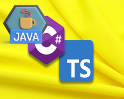

Sonnet is a Test Automation Framework for UI and API testing that complements Playwright or Selenium. Dubbed the "JQuery of Automation", it simplifies writing tests to the extent that manual testers can code within five days of basic training. For experienced coders, it expedites coding times by around 90%.
The Sonnet Framework is the latest version of the Core Page Object Framework (CPO) written for William Hill Gibraltar. The author of the CTF, John Salmon, currently Automation Technical Lead at Lexis Nexis, has updated the underlying technology to utlilise Microsoft Playwright from the original Selenium technology.
The Sonnet Framework won the Ranorex European Automation Project Of The Year. Accenture and Lloyds Bank were
the other finalists.
Sonnet is utilized by companies such as Lexis Nexis, William Hill, Michael Page in the UK and
internationally by companies such as Barco.

Sonnet is available in Java, C# and TypeScript.